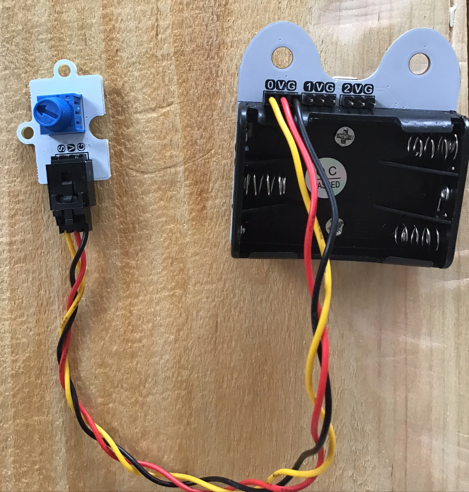

Input and outputs
This morning we saw how the micro:bit comes equipped with integrated sensors and actuators, but we can all agree that for mobile robotics it might be a bit short of muscles. This afternoon you'll see how it is possible to add sensors and actuators to the micro:bit to go toward our goal of building an autonomous mobile robot.
What you'll need
| Buggy mainboard | Potentiometer and wires | Servo motor | Ultrasound sensor |
|---|---|---|---|
 |
 |
 |
 |
Figure: Necessary equipment.
Every pair of learners will need:
- The equipment required in the previous session
- One bit:buggy mainboard, 5 screws and a screwdriver (all in the bit:buggy box)
- One potentiometer
- 6 Wires female-female
- One servo motor (in the bit:buggy box)
- One ultrasound sensor (the HC-SR04)
- 3 x AAA batteries
GPIO
As you might have already noticed, on the bottom of the micro:bit there is a strange set of golden lines (it's not gold, don't start to rip it appart and try selling it!). Those are conductive connectors that will allow you to connect more sensors and actuators to the board. They are what we call inputs and outputs or GPIO (general purpose input/ouputs) which are standards in the world of microcontrollers. Each little golden line is called a pin, and can be used as input or output. The micro:bit has about 20 of them in total (more information here).
Adding a simple sensor
Let's see how to use one of those pins as an input. For that we'll use the potentiometer which is a sort of little blue knob in our case. You'll learn how to capture the position of this potentiometer in our program. Later we'll see how to activate a motor depending on this measure we receive from the potentiometer.
First, you need to connect physically the potentiometer to the micro:bit. For this I invite you to take the bit:buggy mainboard and attach the micro:bit onto it using 5 screws (see figures below).This will allow us to access some pins of the micro:bit more easily and in our case connect the potentiometer. For this connect one cable going from G to G (usually for G which is the ground take a black wire), one to go from V to V (a red one if you have one, this is 3.3V) and one from S to 0 (the signal of the potentiometer to pin0).
| Screwing onto the buggy mainboard | Connecting the potentiometer |
|---|---|
 |
 |
Figure: Connecting the potentiometer to the micro:bit. DO NOT PUT THE BATTERIES IN YET !! You might destroy the micro:bit if you do so...
As written before, we connected the signal of the potentiometer to pin0. To access the information coming from a pin on the micro:bit, we have two functions available: read_analog() or read_digital(). If we are interested in getting a binary information (0 or 1), we use read_digital(). That's what we'd use for a button (pressed or not). If we want more, as it is the case with our potentiometer, we have to use the function read_analog().
Exercice 1
- 1.1. Program micro:bit to display the value returned by pin0.read_analog() using the function display.scroll(). Turn the knob to find what is the range of values that pin0.read_analog() can return.
- 1.2. Use the function displayPositiveNumber(n) defined this morning to display the position of the knob. Remember that this function works well only for arguments in [0-25], so you'll need to do some scaling in between.
Solution exercice 1
The value returned by read_analog() is not in any physical unit. It's just a number encoded in 10 bits, meaning that it's value can go theoretically from 0 to 1024. However, this corresponds to the measure of a voltage on pin0 that can go from 0 to 3.3V (and should never go above 3.3V !).
For the curious ones who wonder what the three wires are, here is a bit more information: basically a sensor will most of the time require a power source, that's what the red and black wires are here for (red = 3.3Volts, black = ground), and it will output a signal here using the yellow wire.
Controlling a motor
We've been talking about mobile robots since the beginning, but for now we have to admit it hasn't been very mobile... Let's work on that. It's now time to connect a motor to our board. For this get one of the motors out of the bit:buggy kit. As you can see, the motor comes with its cable. Plug it as shown in the image below (connection on pin1, taking care of putting the brown/black wire facing the letter G).

Figure: Connecting the potentiometer and the servo motor to the micro:bit.
There are many kinds of motor. We will come back on this later. The one you'll use now is called a continuous servo motor. While the way it works will likely seem a bit obscure, it is a great choice to start with as it is very easy to control.
Servo motors are controlled using pulse width modulation (PWM). The speed of the one we have here is controlled with a squared signal with a period of 10 milliseconds and a duty cycle going from 5% to 25%. Is that gibberish ? It might well be, but no worries, all you need to know is that to output a squared signal with a 10 ms period on pin1 you need to use the instruction pin1.set_analog_period(10) and to change the duty cycle from 5 to 25% we can use the instruction pin1.write_analog(d) with d in [50-250]. If you want to know more about PWMs you can read this page and to know more about continuous servo motors this page.
Exercice 2
- 2.1. Program the micro:bit to make the robot turn. Try different values for d to make it turn at different speeds. What argument do you need to give to the write_analog() function to make the motor stop ?
- 2.2. Program the micro:bit so that you can control the speed of the motor by turning the potentiometer.
Measuring a distance
Now that we are confortable with a simple sensor and actuator, it's time to make things a bit more complex and use the HC-SR04. This sensor is a distance sensor. One thing I like about it is that it makes a great link between physics and computer science. Here is how it works: it sends an ultrasound signal and it measures how long it takes to receive an echo, like bats do. Thanks to the time between the emission and the reception and a bit of physics (distance = time * velocity) you can estimate the distance of obstacles facing the sensor.
Now for the electronics, that's where things get a bit tricky: the sensor needs to be powered (2 cables) and it needs 2 pins connected to the controller: one for the controller to define when to send the ultrasound wave, one for it to be informed about when the echo is received. As we'll see, in terms of programming, it is quite simple, however there is a big problem to solve before programming...
When we were using the red and black cable from the buggy mainboard (without the battery!) to power the potentiometer and motor, it was working because both can run with 3.3 Volts which is the voltage of the micro:bit. But the HC-SR04 does not work with 3.3 V. It needs 5 Volts. This gives a two-sided problem:
- The micro:bit can not power up the HC-SR04;
- The HC-SR04, if it is powered correctly, will output a 5V signal as its echo, while if we give 5V to a micro:bit input it is likely to burn it...
But don't worry, we've got everything planned. To get 5V, we have to put the batteries in the buggy mainboard and turn on the switch. The power of the board will go from 3.3 to 5V. Then, do you remember the potentiometer ? We can use it as a sensor, as we did, but actually we can also use it as a voltage divider to lower the voltage of the echo signal down.
The way we used it as a sensor was to connect it with 3.3V and the ground, and it outputed a portion of 3.3V depending on the position of the knob, which is what we measured with the micro:bit. Instead, we can now feed it with the 0 to 5V echo signal coming from the HC-SR04, and make it output a portion of that, making sure it does not go over 3.3V. Also we need to take a large enough portion of the signal, for instance imagine we outputed 0% of the signal with the potentiometer, then we would not be able to understand when the echo is received on the micro:bit. To get it to work we need the high value of the signal to be 2.3 Volt minimum (2.3 = 0.7 * 3.3... see here for more information). Therefore if we put the knob at its mid position, it should output a signal oscillating in between 0 and 2.5V and it should work.
So practically, here is what to do: disconnect everything and then, as shown in the pictures below: power the HC-SR04 (red wire goes from VCC to V and black from ground to G); connect pin0 to Trig for micro:bit to send the trigger; put the knob of the potentiometer at its mid position and connect it to echo and the micro:bit to generate a safe echo for micro:bit (orange from echo to V, black from G to G, white from S to 1).
| Montage | Circuit diagram |
|---|---|
 |
 |
Figure: Connecting the utlrasound sensor to the micro:bit.
Congratulation ! Our circuit is ready and its time to come back closer to our confort zone. Here is the function that we will use to measure the distance of an obstacle using our montage in centimeters.
from microbit import *
import machine
import utime
pinTrig = pin0
pinEcho = pin1
def get_dist_in_cm():
# send a pulse
pinTrig.write_digital(0)
utime.sleep_us(2)
pinTrig.write_digital(1)
utime.sleep_us(10)
pinTrig.write_digital(0)
# measure the time it takes for the echo to come back in microseconds
# timeout in 10000 us = 0.01 s
d = machine.time_pulse_us(pinEcho,1,10000)
if d>0:
# echo received
return d/Constant
else:
#timeout
return d
Exercice 3
- 3.1. Read the code to verify if it matches the sensor specifications that we defined previously. Will this work if I call the function get_dist() ?
- 3.2. It won't work ! There is something missing: Constant is not defined and that's because I want you to find it now using the laws of physics.
- 3.3. Once you found the value of Constant, write a program to display the distance using the function displayPositiveNumber(n).
Solution exercice 3
In the environment we work in, the sounds travel at about 343 meters per seconds. That corresponds to 0.0343 centimeters per microseconds. While distance = time x velocity, in our case the distance is travelled back and forth, therefore we have 2 x distance = time x velocity. Which leads to d = t x v / 2 = t x 0.0343 / 2 = t x 0.01715 = t / 58.3. So Constant = 58.3.
Conclusion
That's it for today. It's time to unplug everything and turn the buggy mainboard off using it's switch, to save the batteries for the coming days.
Thanks to what you've been learning today, you've got all the tools in your hands to already make an autonomous robot. While this morning you learned to interact with the controller of a robot, now you know how to give it eyes and muscles. Moreover while your familiarity with the use of functions is growing, reusing the work we did today will be a piece of cake. Just see how the function displayPositiveNumber(n) made our lives easier this afternoon to get a quick feedback from our sensors. Well all the work we did with the motor and the distance sensor this afternoon will be easily reusable too in the coming days.
Talking about ease... This afternoon we dabbled in the world of electronics, and I know this can be intimidating at first. But like most other domains, by repetitive explorations out of your confort zone, you make your confort zone wider and soon this field can be yours to play with. But now time to rest and see you tomorrow for some more challenges !